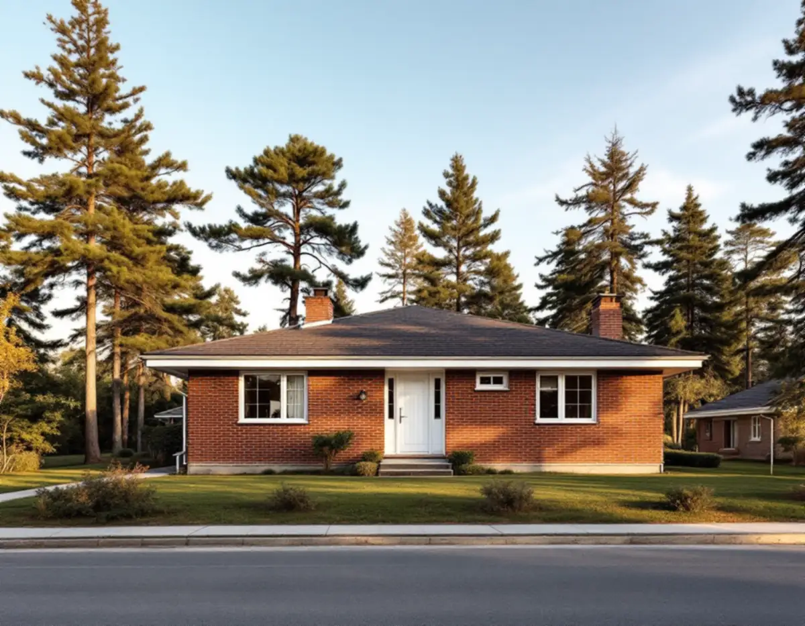
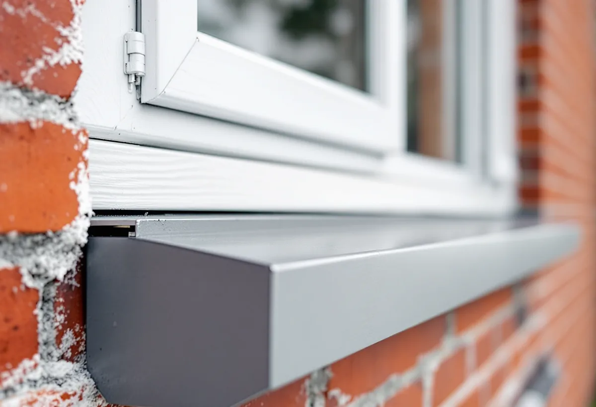
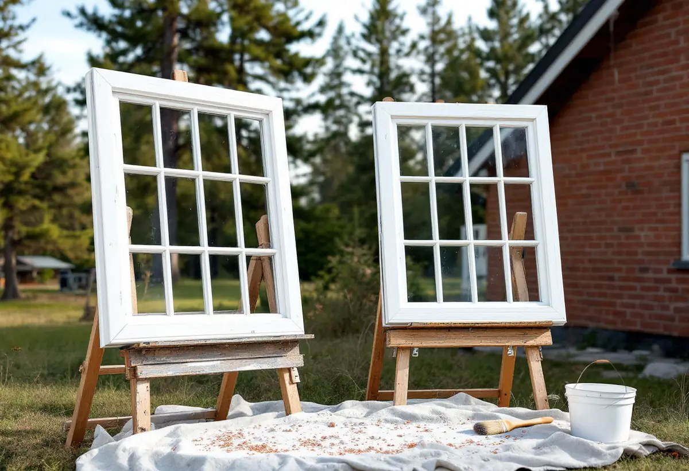

Platsbesök
Vi går runt villan och tittar på fogar, bleck och bågar på varje sida.
I Karby växte ett villasamhälle fram på 1960-talet, och de flesta husen där har fasader av tegel. Geal Entreprenad AB renoverar fönster i Vallentuna och ser över både bågarna och anslutningen mellan karmen och tegelväggen.

Den fördjupade översiktsplanen för Karby och Brottby beskriver Karbys villasamhälle som utbyggt på 1960-talet. Bebyggelsen är till stor del typisk för tiden, med många tegelvillor i funktionalistisk stil som är varsamt placerade i terrängen och har sparade äldre tallar mellan husen. Många av villorna har enligt planen arkitektoniska kvaliteter med tidstypiska detaljer, och även strukturen med husen indragna från gatan är tidstypisk. I Brottby finns typiska villor från 1970-talet.
Planen pekar ut teglet som det dominerande materialet i området och vill att det ska vara utgångspunkt när något nytt gestaltas. Karby och Brottby ligger dessutom i en historiskt rik miljö längs Långhundraleden, och planen föreslår att ny bebyggelse delvis hamnar inom riksintresset för kulturmiljövården Vada–Össeby-Garn. I en tegelvilla är det originalfönstren, inramade av muren, som bär mycket av de tidstypiska detaljerna, och därför lagar vi dem hellre än byter.

Boverkets energiguide skriver att det enklaste sättet att förbättra ett fönster är att se till att det är tätt, och nämner isoleringen runt karmen, drevningen och listerna mellan båge och karm. Guiden påpekar också att gamla fönstertätningar ofta släpper igenom vatten under fönstren, särskilt i lägen som utsätts för slagregn, och råder att utreda om det finns fuktskador i väggen innan något görs.
Vid platsbesöket tittar vi därför på fogen mellan karm och tegel, på blecket under fönstret och på karmens bottenstycke innan vi rör bågarna. Gamla fogmassor ska undersökas innan de tas bort: energiguiden skriver att de kan innehålla till exempel PCB eller asbest, som är saneringspliktigt. Boverkets sida om asbest anger att materialet förbjöds inom byggsektorn 1982 och främst finns i byggnader från 1940–1970. Ett prov avgör, och först därefter fogar vi om.
Riksantikvarieämbetets handbok om byggnadsmåleri skriver att söderfasader behöver målas om oftare än norrfasader, och att fönster behöver det oftare än fasaden omkring. Fönster hör till de byggnadsdelar som bör underhållsmålas löpande. Väntar man för länge riskerar underlaget att ta skada, och då blir kommande renoveringar både dyrare och mer komplicerade.
I en villa med fönster åt alla håll är det därför sällan alla bågar som behöver samma insats. RAÄ:s skrift om fönster påpekar att bara de partier som verkligen är nedslitna behöver kittas och målas om, och görs det i tid räcker det ofta med rengöring och bättring. Fönstersnickerier rengörs bäst med sodatvätt för hand, löst kitt skrapas bort och blottade kittfalsar grundas innan de kittas. Vi delar upp kostnadsförslaget fönster för fönster, så att de mest utsatta kan göras först.
Boverket beskriver ett fall där byte är rimligare än renovering: treglasfönster vars glaskassett har förlorat sin funktion samtidigt som monteringen i instickskarmar ger betydande energiförluster. Det är enligt Boverket vanligt för treglasfönster som sattes in under sjuttiotalet. Är fönstren i stället i gott skick kan det vara mer lönsamt att förbättra dem, till exempel genom att täta eller byta den inre rutan till energiglas, än att byta till nya.
Vallentuna kommun skriver att en- och tvåbostadshus inte behöver bygglov för ändringar som nya fönster, men att lov krävs om fastigheten ligger inom ett kulturhistoriskt särskilt värdefullt område eller om byggnaden är särskilt värdefull. Ändringar ska ändå göras varsamt och anpassas till byggnadens värden. Om fönsterbyte, flygbuller och glasval kan du läsa under fönsterbyte i Vallentuna, och om fasadens färg under målare i Vallentuna.

Vi går runt villan och tittar på fogar, bleck och bågar på varje sida.
Gamla fogar och kitt provas innan något tas bort.
Varje fönster för sig, så att de mest utsatta kan göras först.
Fogen mellan karm och tegel görs om och skadade bleck byts.
Sodatvätt, skrapning, grundning av kittfals, kittning och målning.
Vi kontrollerar att bågarna sluter tätt och går lätt att öppna.
Skatteverket godkänner rotavdrag i ett småhus för att reparera fönster, måla fönster och byta eller reparera fönsterbleck. Att mäta asbest ger inget avdrag, men sanering av asbest i samband med byggarbete gör det.
Avdraget är högst 30 procent av arbetskostnaden, högst 50 000 kr per person och år och högst 75 000 kr tillsammans med rutavdrag. Det är bara arbetskostnaden som ger avdrag. Du ska äga huset när arbetet utförs, och vi drar avdraget direkt på fakturan.
Antalet fönster, hur mycket fog och bleck som behöver göras om, om fogmassan måste saneras och hur många bågar som bara behöver bättras påverkar mest. Efter ett gratis platsbesök får du ett skriftligt kostnadsförslag.
Byta eller renovera fönster.
Fönsterbyte i Stockholm →Takbyte, takbesiktning och plåtarbeten.
Takläggare i Vallentuna →Villaområden och gårdar.
Takrenovering i Vallentuna →Inom eller utanför plan, avlopp och brunn.
Attefallshus i Vallentuna →Nytt våtrum, Roslagsvatten och egen brunn.
Badrumsrenovering i Vallentuna →Ritningar, grannar och kommunens mark.
Byggföretag i Vallentuna →Villor och grupphus från 1970-talet och framåt.
Fasadmålning i Vallentuna →Fritidshus, stationssamhällen och villor i Vallentuna.
Fasadrenovering i Vallentuna →Flygbuller, glasval och lov i Vallentuna.
Fönsterbyte i Vallentuna →Golv på platta och golvvärme i villan.
Golvläggare i Vallentuna →Slipa och laga gamla golvplank.
Golvslipning i Vallentuna →Utbyggda kök, villor och gårdar.
Köksrenovering i Vallentuna →Gårdar, fritidshus och villor i Vallentuna.
Målare i Vallentuna →Rännor, plåttak och uthus i Vallentuna.
Plåtslagare i Vallentuna →Uthus, uterum och fritidshus.
Snickare i Vallentuna →Lovfrågan, skorstenen och arkivet.
Takbyte i Vallentuna →Ritningar, nivåer och arkivet.
Tillbyggnad i Vallentuna →